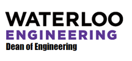
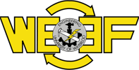
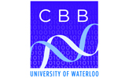
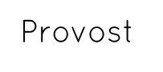

Acknowledgements
Our Sponsors
Our team is grateful for the help of our sponsors:
|  | ||
 |  |  |
|  |
Special Mentions
- Howard Siu: for mentoring us in the use of the AFM
- Moon Gyu Park: for his assistance with the TEM
- BIOMOD 2014: for organizing and hosting the competition this year
- SakuraLBP: for helping us record part of the video
- Hubert Argasinski: for helping us with image editing
- Paula Petrie: for general team co-ordination and support
- Tom Dean: for lending us lab equipment